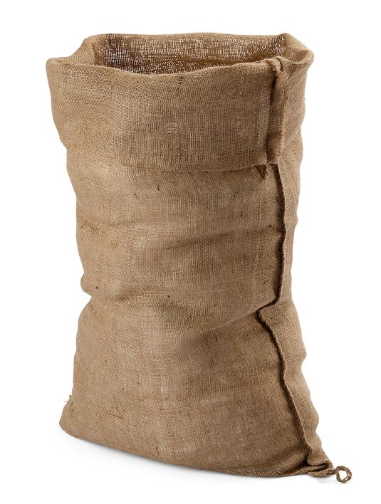

| Jutebeutel |
|---|
Was ist ein Jutebeutel? Jeder kennt den «Jutebeutel». Man sieht ihn immer öfter, egal ob in der Stadt,auf dem Land, in der Schule oder im Urlaub. Mal einfarbig, mit buntem Muster oder mit witzigen oder politischen Statements. Langsam, aber sicher verwandelt sich der Jutebeutel zum It-Piece der heutigen Zeit. Doch entspricht dieser Begriff wirklich dem Bild, welches wir dazu im Kopf haben? Nein, eigentlich nicht. Denn Jute ist das Material, aus dem Kartoffelsäcke gefertigt werden, welche wir oft mit dem Sackhüpfen verbinden. Die uns bekannten Jutebeutel werden aber heutzutage so gut wie nur noch aus Baumwolle gefertigt. Warum wir den Beutel dann so nennen? Das ist eine gute Frage. Wir vermuten, wie auch viele andere, dass dieser Ausdruck einfach noch von früher übrigblieb. Ausserdem bringt er einiges an Flair mit sich und es klingt einfach «knackiger» als «Baumwollbeutel». Ein anderer verbreiteter Begriff ist «Tote Bag». Dieser wird englisch ausgesprochen und bedeutet so viel bedeutet wie «Tasche zum Herumtragen». Immer öfters hört man auch einfach «Stofftasche» oder «Baumwolltasche», was um einiges weniger verwirrend ist. |
|
 |